Meine Workshops / Webinare (Auswahl)
2025
- 1-std. Webinar „Prüfungsvorbereitung mit Die Deutschprofis", Januar 2025
- 2-std. Seminar „Spielerisches und handlungsorientiertes Lernen in der Primarschule" am Goethe-Institut Budapest, 1. März 2025
- 1-std. Podiumsbeitrag „Zukunftsvision des Fremdsprachenunterrichts" am Goethe-Institut Budapest, 2. März 2025
- 2-tägiges Seminar „Gut geplant ist halb gewonnen: Tipps für eine effektive Unterrichtsvorbereitung am Beispiel des Lehrwerks Die Deutschprofis" am Goethe Institut Taschkent, 4.–5. Juni 2025
2024
- 2-std. Webinar „Verstehen braucht Sehen: Arbeit mit Bildern, Fotos und Videos", Juli 2024
- 1-std. Webinar „Kurze Spielaufgaben zwischendurch", Juli 2024
- 1-std. Webinar „Landeskunde: Geschichte, aktuelle Trends, kreative und spielerische Übungen", Juni 2024
- 1-std. Webinar „Die Deutschprofis – Fertigkeitentraining von A1 bis B1", Mai 2024
- 1-std. Webinar „Landeskunde – kreativ und handlungsorientiert unterrichten", März 2024
- 2-std. Webinar „Die Deutschprofis digital – wie optimiere ich meinen Unterricht", Februar 2024
2023
- 2-std. Webinar „Lernen mit allen Sinnen in der Vorweihnachtszeit", für das Goethe-Institut Taschkent, Dezember 2023
- 1-std. Webinar „Fertigkeit Lesen: Tipps und Übungen", November 2023
- 1-std. Webinar „Kreative Wortschatzaufgaben, die zum Sprechen animieren", November 2023
- 2-std. Webinar „Deutsch: sportbegeistert und bewegt" für das Goethe-Institut Paris, Oktober 2023
- 4-teilige Webinar-Reihe „Aller Anfang ist schwer: kreative Unterrichtseinstiege" für das Goethe-Institut Krakau, Juli 2023
- 2-std. Webinar „Übungen und Spiele zur Förderung des Sprechens" für das Goethe-Institut Pune Indien, Juni 2023
- 2-std. Webinar „Freies Sprechen trainieren mit Erfolg" für Bildungsinstitut „WOM", Czestochowa, April 2023
- 1-std. Webinar „Ideen für Projekte mit wenig Zeitaufwand und viel Spaß", Klett Hellas, März 2023
2022
- 2-std. Webinar „Unterrichtsplanung und Lehrskizzen" für das Goethe-Institut Kasachstan, Oktober 2022
- 2-std. Webinar „Rituale im Deutschunterricht" für das Goethe-Institut Kasachstan, Oktober 2022
- 4-std. Webinar „Differenzieren muss nicht zeitaufwendig sein" für das Goethe-Institut Moskau, September 2022
- 4-std. Webinar „Motivation im DaF-Unterricht? Auf jeden Fall!" für das Goethe-Institut Moskau, September 2022
- 2-std. Webinar „5-Minuten-Aktivitäten zur Förderung des freien Sprechens" für das Goethe-Institut Kasachstan, August 2022
- 2-std. Webinar „Tipps für einen spannenden Online-Unterricht" für das Goethe-Institut Moskau, Juni 2022
- 1-std. Webinar „Hörverstehenstraining im Lehrwerk Die Deutschprofis", April 2022
- 2-std. Webinar „Kurze Sprechaktivitäten im DaF-Unterricht A1 bis B1" für das Goethe-Institut Krakau, März 2022
- 1-std. Webinar „Kreative Grammatikaufgaben, die das Sprechen fördern", Februar 2022
- 1-std. Webinar „Fit für die Prüfung mit dem Lehrwerk Die Deutschprofis", Januar 2022
2021
- 4-std. Webinar „Spiele im DaF-Unterricht" für das Goethe-Institut Sofia, Dezember 2021
- 2-std. Webinar „Flüssiges Sprechen trainieren" für das Goethe-Institut Moskau, November 2021
- 1-std. Präsentation „Zwei Fliegen mit einer Klappe oder das CLIL-Konzept im Primarunterricht" im Rahmen der Online-Konferenz „DaF-Unterricht im digitalen Zeitalter", Goethe-Institut Usbekistan, Oktober 2021
- 4-std. Webinar „Motivationsschreiben – Aller Anfang ist schwer" für das Goethe-Institut Kasachstan, September 2021
- 2-teilige Webinar-Reihe „Lesen im DaF-Unterricht: Warum? Was? Wie?" für das Goethe-Institut Kasachstan, September 2021
- 1-std. Webinar „Hallo Anna neu: Was ist neu? Was ist anders?" am Bahçesehir-College, Türkei, August 2021
- 2-std. Webinar „Tipps für mehr Spaß und Motivation beim Wortschatz- und Grammatiklernen", 2. Digitaler Deutschlehrertag, Kasachstan, August 2021
- 4-teilige Webinar-Reihe „Landeskunde – kreativ und handlungsorientiert unterrichten" für die Deutsche Bildungsgesellschaft Polen, Juli 2021
- 3-teilige Webinar-Reihe „Kreatives Schreiben" für das Goethe-Institut Krakau, Mai–Juni 2021
- 3-teilige Webinar-Reihe „Schreiben und Landeskunde" für das Goethe-Institut Krakau, Mai–Juni 2021
- 1-std. Webinar „Über das Fach hinaus: Deutsch meets Erdkunde meets Geschichte und Kunst", Mai 2021
- 6-teilige Webinar-Reihe „Berufsbezogenes Deutsch" für das Goethe-Institut Usbekistan, April 2021
- 4-teilige Webinar-Reihe „Motivationstipps für den Unterricht" für das Goethe-Institut Kasachstan, März–April 2021
- 2-std. Webinar „Grammatik kreativ", Universität Bratislava, April 2021
- 3-std. Webinar „Mini-Projekte im DaF-Unterricht" für das Goethe-Institut Prag, April 2021
- 1-std. Webinar „Kleine Sprechaufgaben mit großer Wirkung", März 2021
- 1-std. Webinar „Hallo Anna neu 3 – das Lehrwerk ist komplett", März 2021
- 1-std. Webinar „Mit Hallo Anna neu – spielerisch unterrichten", Februar 2021
- 1-std. Webinar „Die Deutschprofis digital", Januar 2021
2020
- 1-std. Webinar „Neuheiten im Konzept von Hallo Anna neu: Von Projekten über neue Differenzierungsmöglichkeiten bis hin zu der digitalen Version – Vorteile für Lehrende und Lernende", Dezember 2020
- 1-std. Webinar „Hallo Anna neu und digital", Dezember 2020
- 8-teilige Webinar-Reihe „Grammatik und Sprechen – spielerisch und handlungsorientiert" für das Goethe-Institut Usbekistan, November 2020
- 2-std. Webinar „Deutschlernen mit Spaß und Bewegung" für das Goethe-Institut Belgrad, November 2020
- 7-teilige Webinar-Reihe „Tipps und Ideen zur kreativen und interaktiven Unterrichtsgestaltung" für das Goethe-Institut Kasachstan, Oktober–Dezember 2020
- 1-std. Webinar „Landeskunde kreativ mit Die Deutschprofis", September 2020
- 1-std. Webinar „Rhythmus, Reime und Lieder mit Hallo Anna neu", Juli 2020
- 1-std. Webinar „Handlungsorientiert lernen mit dem Lehrwerk „Die Deutschprofis"", Juli 2020
- 1-std. Webinar „Hallo Anna neu – bewährtes Konzept mit neuen Höhepunkten", Juni 2020
- 1-std. Webinar „Einfaches und schnelles Differenzieren mit „Die Deutschprofis"", Mai 2020
2019
- 4-std. Webinar/Workshop „Grammatikunterricht: handlungsorientierte Aufgaben" an der Universität der Völkerfreundschaft, Moskau, März 2019
- 4-std. Workshop „Binnendifferenzierte Grammatikaufgaben im Deutschunterricht", Deutsche Schule Moskau, 16. Februar 2019
2018
- 2-std. Workshop „Grammatik im Gespräch – handlungsorientierte Aufgaben", Casablanca, Marokko, 23.–25. November 2018
- 1-std. Präsentation „Binnendifferenzierung im Deutschunterricht", Gesamtrussische Bildungskonferenz, Moskau, 02. November 2018
- 1-std. Workshop „Deutsch für die Romadie – Lehrbuch-Rallye", Fribourg, Mai 2018
- 3-std. Workshop „Berufsbezogenes Deutsch am Beispiel von ‚Aussichten'" an der Universität der Völkerfreundschaft, Moskau, Februar 2018
- 4-std. Workshop „Die Deutschprofis B1: Prüfungsvorbereitung" am Goethe-Institut Moskau, Februar 2018
2017
- 2-std. Workshops „Hallo Anna" und „Die Deutschprofis", Istanbul, Ankara, Izmir, 17.–29. August 2017
- 4-std. Workshop „Die Deutschprofis A2 – fächerübergreifend unterrichten" am Goethe-Institut Moskau, März 2017
- 3-std. Workshop „Zwischendurch mal schreiben – kreative Schreibaufgaben für den Unterricht" an der Staatlichen Landesuniversität Moskau (MGOU), März 2017
- 3-std. Workshop/Webinar „Mut zum Diskutieren" an der Universität der Völkerfreundschaft, Moskau, Februar 2017
2016
- 1-std. Workshop „Die Deutschprofis – Deutsch nach Englisch lernen", Gesamtrussische Bildungskonferenz „Mehrsprachigkeit in Russland: Deutsch – die erste Zweite", Moskau, 19.–20. November 2016
- 4-std. Workshop „Die Deutschprofis – ein neues Lehrwerk für die Schule" am Goethe-Institut Moskau, September 2016
- 2-std. Workshop „Bekannte und neue Lernwege im Grammatikunterricht" an der Universität der Völkerfreundschaft, Moskau, September 2016
2014
- 4-std. Workshop „Das Ohr liest mit" am Goethe-Institut Moskau, März 2014
- 4-std. Workshop „Seh- und Hörverstehen üben mit ‚Netzwerk' und ‚Aspekte neu'" an der Universität der Völkerfreundschaft, Moskau, März 2014
- 4-std. Workshop „Grammatik unterrichten mit Klett-Langenscheidt-Materialien" an der Pädagogischen Universität, Moskau, März 2014
2013
- 3-std. Workshop „Einsatz literarischer Texte im Deutschunterricht", Internationale Konferenz „Moscow Expo Language and Culture", November 2013
- 4-std. Workshop „Tipps zur Vorbereitung auf den TestDaF", Internationale Konferenz „Moscow Expo Language and Culture", November 2013
- 4-std. Workshop „Spielen in der Grundschule" am Goethe-Institut Moskau, Oktober 2013
- 2-std. Workshop „Spielerisch Deutsch lernen im Primarbereich" am Bahçesehir-College, Istanbul, August 2013
- 2-std. Workshop „Miniprojekte im Grammatikunterricht" am Bahçesehir-College, Istanbul, August 2013
- 2-std. Workshop „Spielideen für den Grammatikunterricht?" am Bahçesehir-College, Istanbul, August 2013
- 2-std. Präsentation des Primarlehrwerks „Hallo Anna", Internationale Deutschlehrertagung, Bozen (Italien), Juli/August 2013
- 2-tägige Fortbildungsveranstaltung „Grammatik kreativ" für ukrainische Lehrer am Goethe-Institut Kiew, Mai 2013
- 4-std. Workshop „Wie motiviere ich meine Schüler?" am Goethe-Institut Moskau, April 2013
- 4-std. Workshop „Hören, sehen, verstehen: Einsatz von Multimedia und Internet im Deutschunterricht" an der Universität der Völkerfreundschaft, Moskau, April 2013
2012
- 4-std. Workshop „Miniprojekte für den Deutschunterricht" am Goethe-Institut Moskau, Februar 2012
- 4-std. Workshop „Mit ‚Logisch' zum Zertifikat B1 für Jugendliche" für russische Deutschlehrende, Moskau, Februar 2012
- 4-std. Präsentation „Vernetzt lernen und unterrichten mit ‚Netzwerk' und neuen Medien" für russische Deutschlehrende und Studierende der Universität der Völkerfreundschaft, Moskau, Februar 2012
- 4-std. Workshop „Freies Sprechen im Deutschunterricht" am Sprachenzentrum „Alibra school", Moskau, Februar 2012
2011
- 4-std. Workshop „Beste Aussichten für Ihren Unterricht" (Präsentation des Grundstufenlehrwerks „Aussichten") für MitarbeiterInnen des Goethe-Instituts Izmir, Juni 2011
- 4-std. Fortbildungsveranstaltung für türkische Deutschlehrende „Magnet – einfach anziehend", Goethe-Institut Izmir, Türkei, Juni 2011
- 4-std. Workshop „Deutsch lernen im Team mit ‚Team Deutsch'" für MitarbeiterInnen des Goethe-Instituts Moskau, April 2011
- 4-std. Workshop „Schriftliche Kommunikation im Alltag und Beruf ab Stufe B2" für russische Deutschlehrende und Studierende der Universität der Völkerfreundschaft, Moskau, Februar 2011
2010
- 4-std. Workshop „Autonomes Lernen mit ‚Genial' und ‚Logisch': Lernstrategien und Sprachenportfolio" am Sprachenzentrum „Alibra school", Moskau, März 2010
- 4-std. Fortbildungsveranstaltung „Im Labyrinth der Deutschprüfungen (Schwerpunkt – TestDaF)" für russische Deutschlehrende und Studierende der Universität der Völkerfreundschaft, Moskau, März 2010
- 4-std. Präsentation von neuen Langenscheidt-Lehrmaterialien für MitarbeiterInnen von Verlagen, Buchhandlungen und Bibliotheken, Moskau, März 2010
- 4-std. Workshop „Mut zum Sprechen", 1. Sprachenkongress der Bayerischen Volkshochschulen, München, März 2010
2009
- 2-std. Workshop „Integration mit Aussichten", Internationale Deutschlehrertagung, Jena, Juli 2009
- 4-std. Grammatik-Workshop „Grammatik im Gespräch" am Goethe-Institut Moskau, März 2009
2007
- 2-std. Präsentation der Grammatik-Übungsbücher „Grammatik und Konversation 1 und 2" für Dozentinnen und Dozenten der MVHS, München, Mai 2007
2005
- 2-std. Grammatik-Workshop „Grammatik lernen – interessant gemacht", Internationale Deutschlehrertagung, Graz (Österreich), August 2005
Impressionen
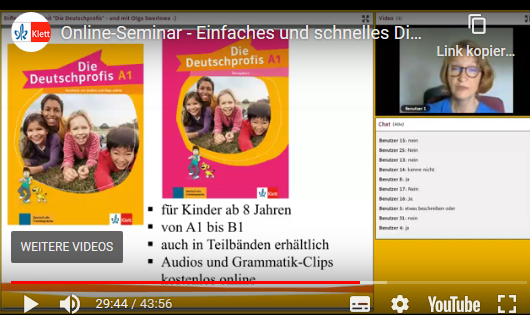
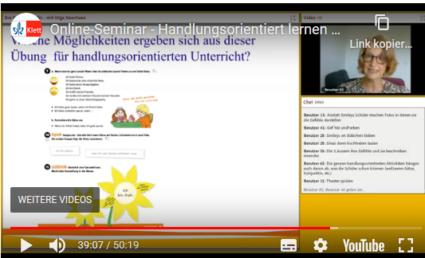
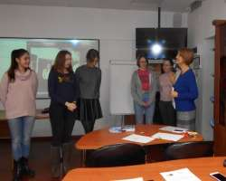
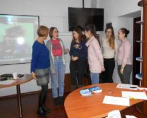
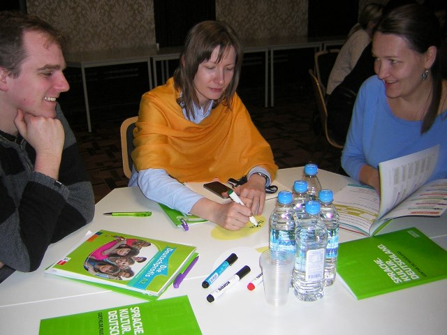
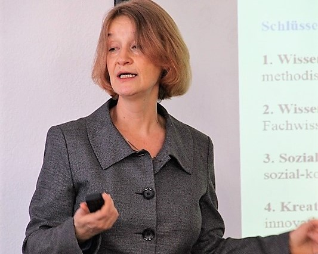
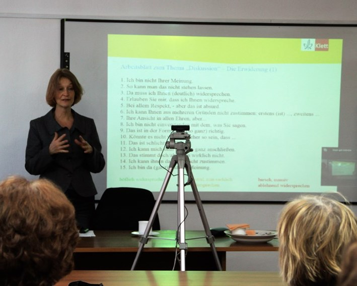
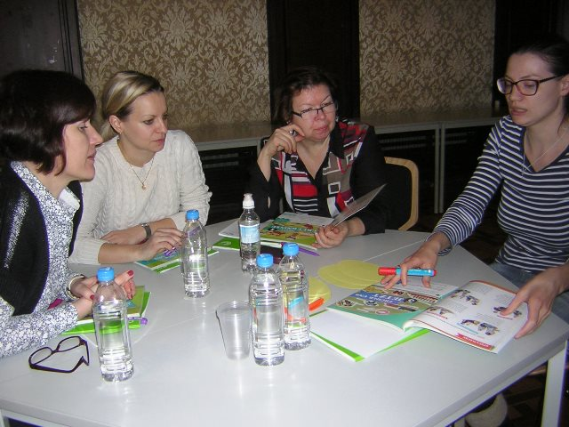
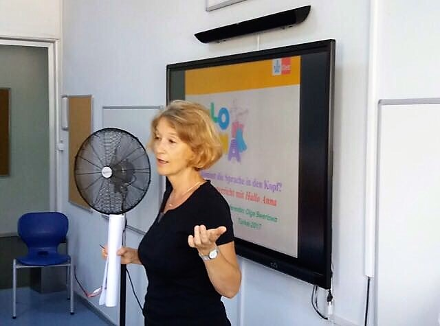
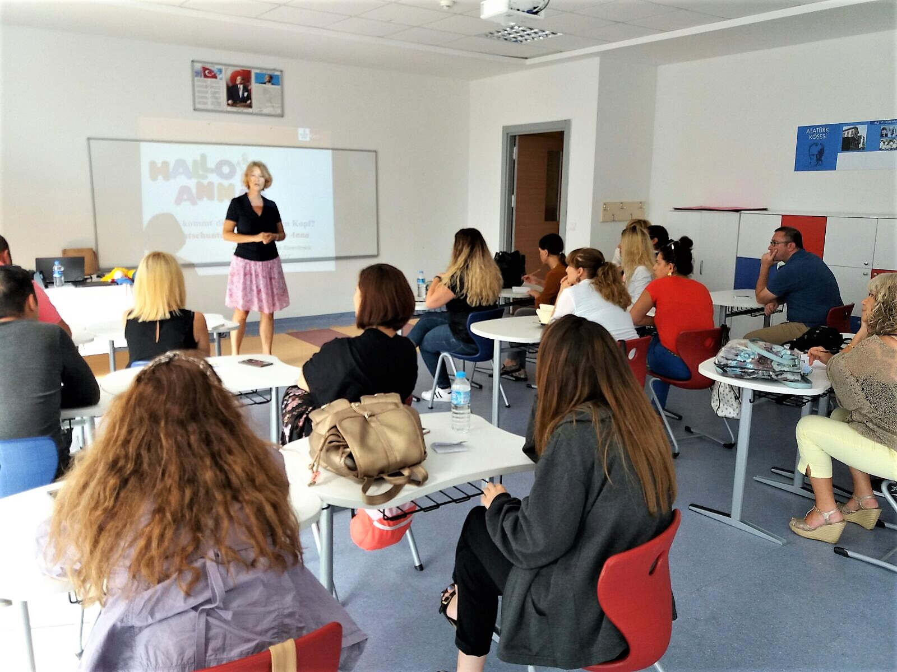
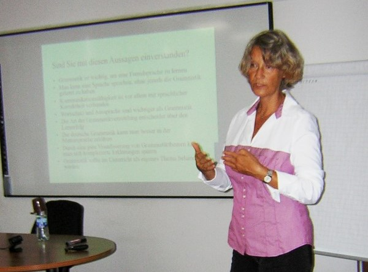
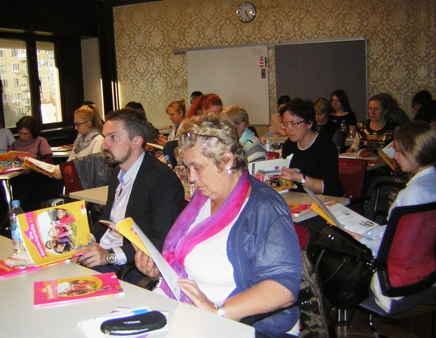
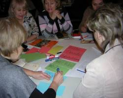
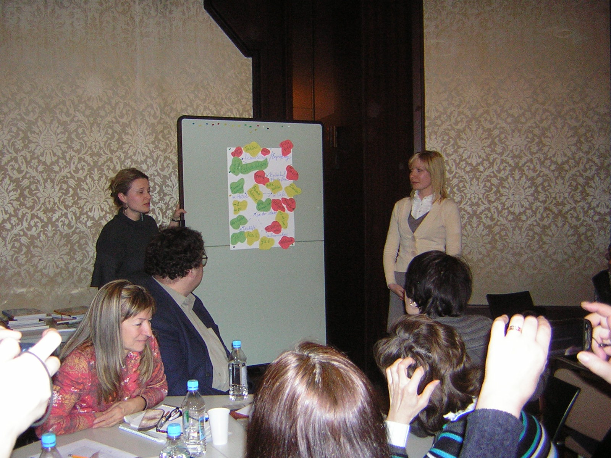
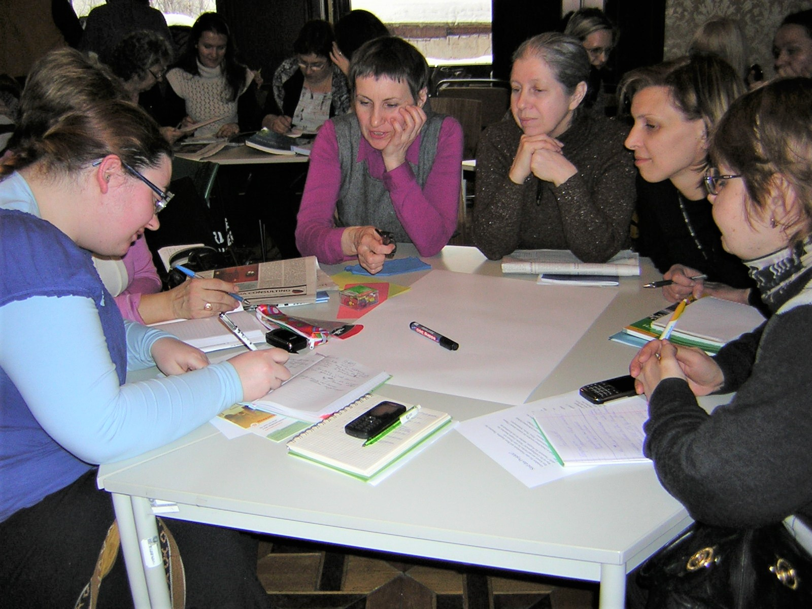
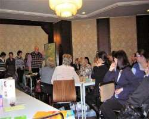
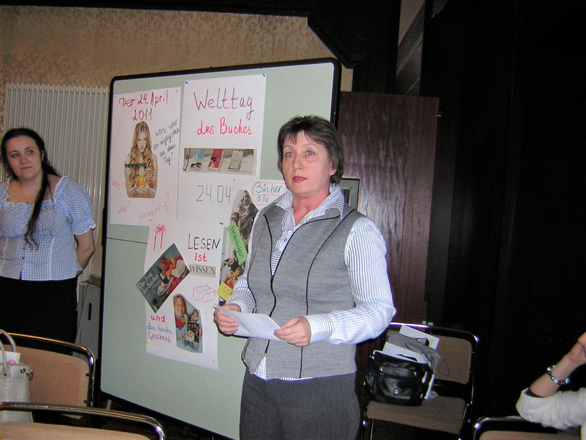
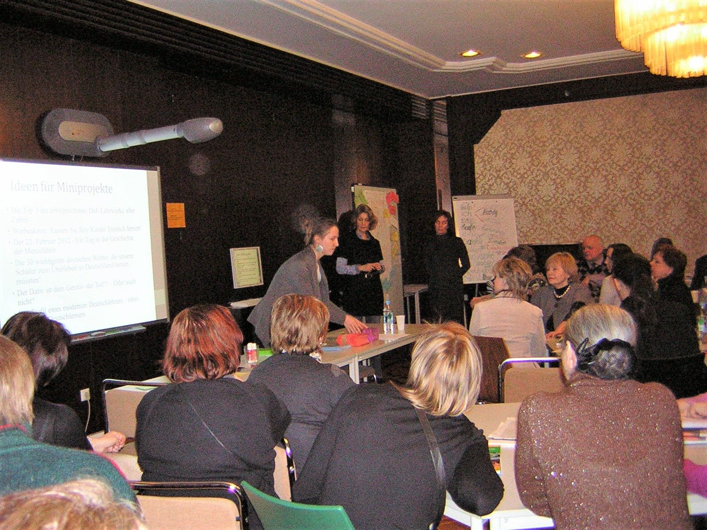
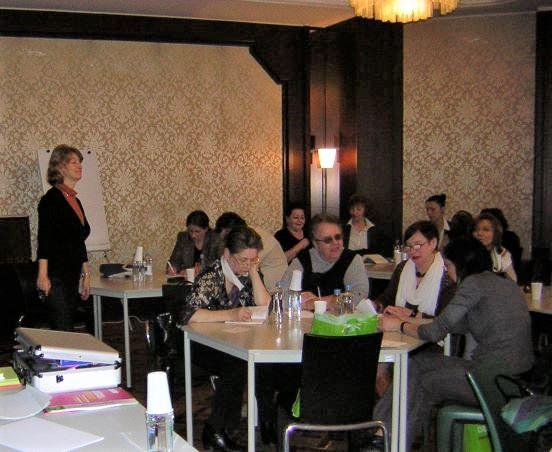
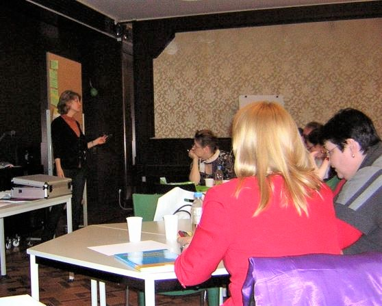